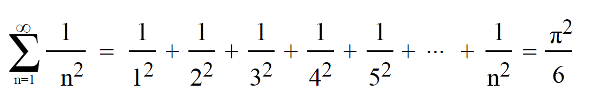
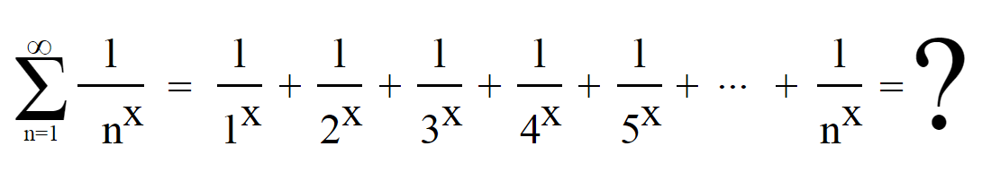

Riemann, chcąc wyznaczyć wartość uogólnionego problemu bazylejskiego: 
W miejsce cyfry 2 w wykładniku postanowił wstawić każdą inna wartość: 
Sformułował w ten sposób funkcje dzeta, nazwa pochodzi od greckiej litery dzeta - ζ.
Za dziedzinę przyjął wszystkie liczby rzeczywiste oraz zespolone, a następnie wyznaczył dwa rodzaje miejsc zerowych: trywialne oraz nietrywialne.
Trywialne są to banalne, oczywiste, łatwe do obliczenia w tym przypadku są to wszystkie kolejne liczby nieparzyste ujemne. Nietrywialne, nierzeczywiste to takie, które przyjmują wartości na osi urojonej. Wyznaczył cztery takie miejsca,
które ułożyły się na jednej prostej przecinając wartość ½ na osi liczb rzeczywistych. Prostą tą nazwano linią krytyczną.
Część rzeczywista każdego nietrywialnego zera funkcji ζ jest równa ½.
lub inaczej
Wszystkie nietrywialne miejsca zerowe funkcji dzeta leżą na lini prostej.
Hipotezy tej nie udało się jednak jej ani potwierdzić, ani obalić, choć wyznaczono już 1 500 000 000 miejsc zerowych i wszystkie te znajdowały się na prostej krytycznej.
Problem jaki stworzył Riemann wpisano na listę siedmiu problemów milenijnych.
Wystarczy znaleźć jeden punkt nie leżący na tej prostej, a otrzyma się nagrodę ufundowaną przez Clay Mathematics Institute wysokości 1 000 000 dolarów.
No dobrze, ale co mają wspólnego jakieś liczby wyimaginowane z pewnymi liczbami naturalnymi?
Podczas wyznaczania nietrywialnych miejsc zerowych zauważono pewną zależność, ich występowanie jest związane z rozmieszczeniem liczb pierwszych.
Występują one w takich samych odległościach od siebie.
Udowodnienie hipotezy pomogło by w odkryciu zależności występowania liczb pierwszych.  Przyczyniłoby się także do rozwoju fizyki,
gdzie występowanie miejsce zerowych ma związek z rozkładem poziomów energetycznych jąder atomowych pierwiastków ciężkich.
Przyczyniłoby się także do rozwoju fizyki,
gdzie występowanie miejsce zerowych ma związek z rozkładem poziomów energetycznych jąder atomowych pierwiastków ciężkich.